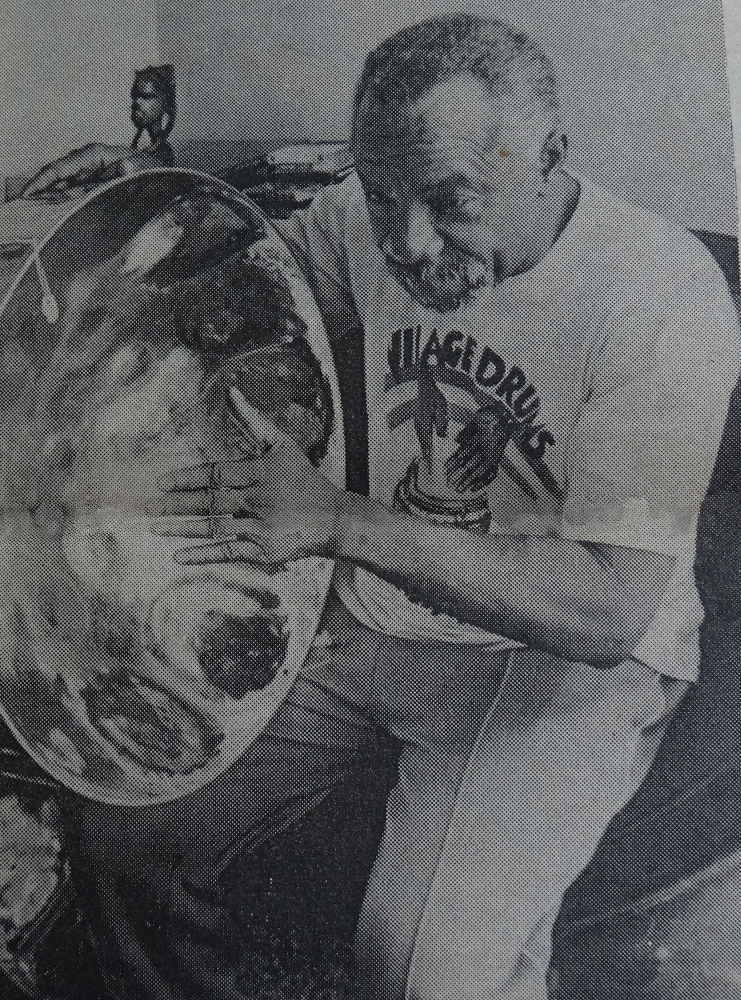
The "tuner's tuner"
Harmonic tuning pioneer
Click to Reveal- Introduced harmonic tuning in 1956 using octaves and overtones.
- Helped give steelpan its bright, complex tonal quality.
- First to amplify the steelpan electronically.
- Helped develop the Double Tenor with Vincent Pompey.
- Awarded the Chaconia Medal Gold and the Order of the Republic of T&T.
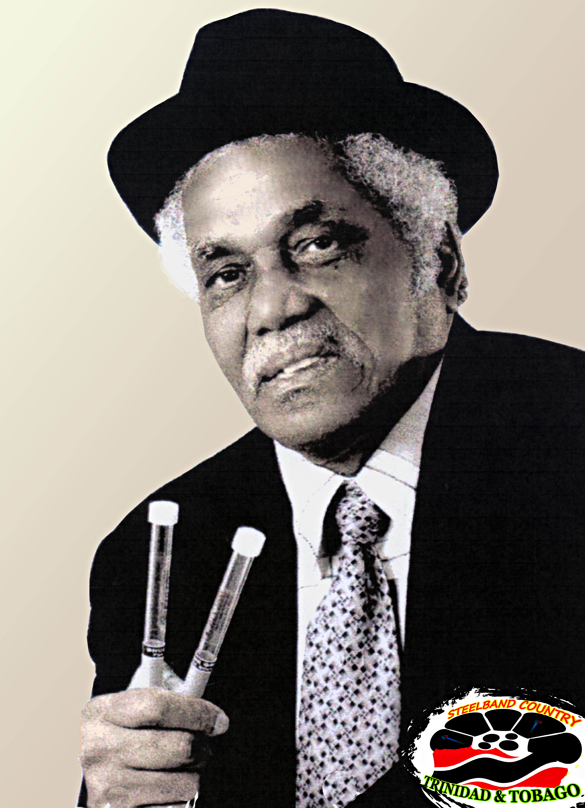
Spider Web Pan creator
North Stars captain
Click to Reveal- Created the Spider Web tenor pan in 1953.
- Shifted note layout toward the Circle of Fifths.
- Helped standardize note arrangement on the steelpan.
- Captained Pan Am North Stars, winners of the first Panorama in 1963.
- Awarded the Chaconia Medal Gold and the Order of the Republic of T&T.
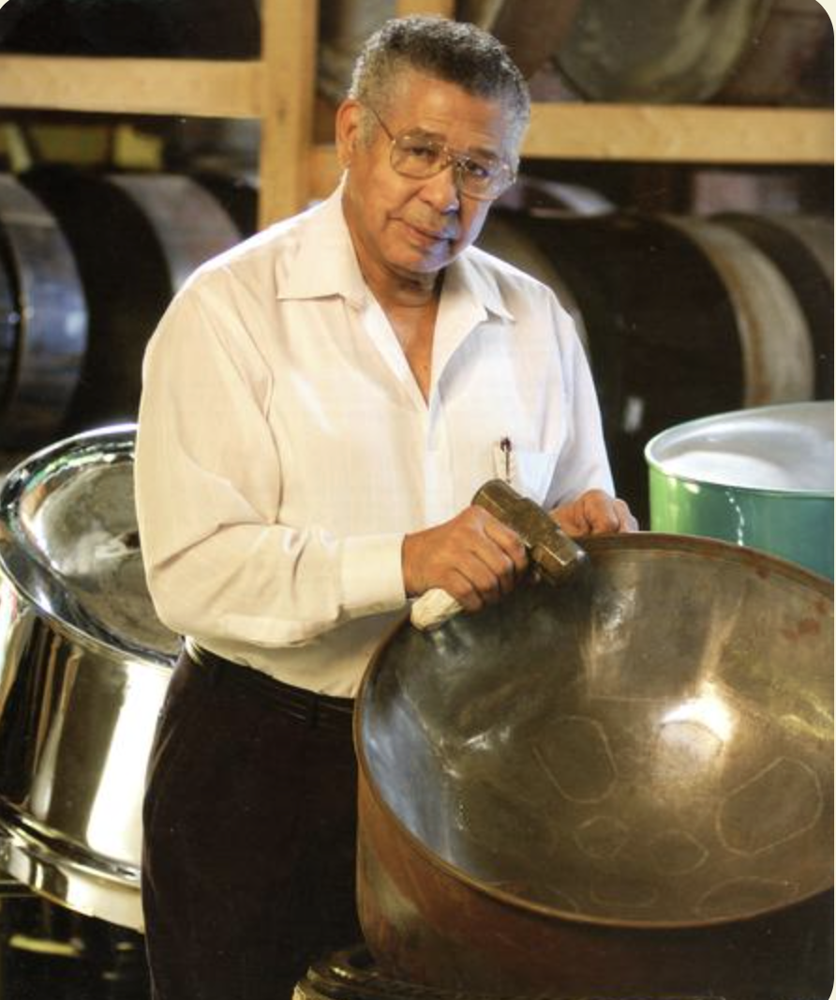
1927-2018
Father of the modern steelpan
Click to Reveal- First to use a discarded oil barrel to build a steelpan.
- Sank the drum top into a concave playing surface.
- Used firing to improve acoustic properties.
- Founded Oval Boys, later Invaders Steel Orchestra.
- Later taught pan building through West Virginia University's tuning project.
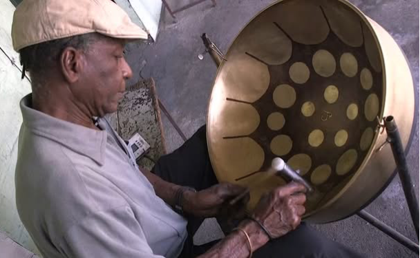
Tuner, innovator, educator
Percussive Pan creator
Click to Reveal- Developed the Percussive Pan, also called the Guitar Pan, in 1986.
- Used a guitar-like fretboard layout played with a pick.
- Also created a bass version of the instrument.
- Worked with UTT and international partners on pan education.
- Recipient of the Rudolph Charles Pan Innovation Award.
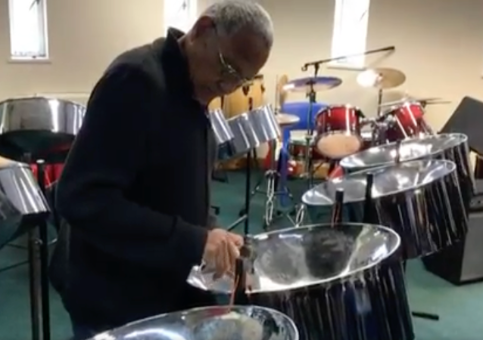
Born in San Fernando, 1943
Steelpan tuner and maker
Click to Reveal- Known for crafting finely tuned pans.
- Worked with bands including Desperadoes and Starlift.
- Also worked with St. Joseph's Convent and St. Mary's College.
- Tuner and maker for the British Philharmonic Steel Orchestra.
- Supported pan education and research through educational institutions.
Double-tenor tuner and maker
Founder of APS
Click to Reveal- Founder of Augustus Peters Steelpans, known as APS.
- Recognized as a premier tuner in the global steelpan industry.
- Traveled as far as Japan and Canada to tune and maintain instruments.
- Worked on major events including Caribana Festival.
- Pan Trinbago acknowledged him in 2014 as one of the best tuners in the world.
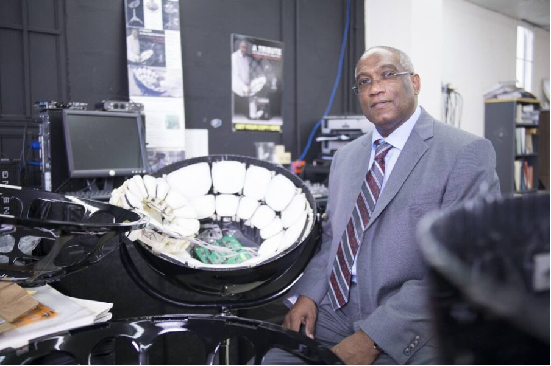
Engineer and UWI professor
G-Pan and P.H.I. development
Click to Reveal- Convener of the UWI Steelpan Research Centre.
- Coordinated the Steelpan Initiatives Project at UWI.
- Helped develop and patent the G-Pan.
- Helped develop the Percussive Harmonic Instrument, an electronic form of pan.
- First recipient of the Order of the Republic of Trinidad and Tobago in 2008.
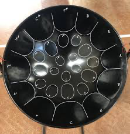
Electronic Pan inventor
Digital steelpan sounds
Click to Reveal- Invented the Electronic Pan, or E-Pan, in the 2000s.
- The E-Pan allowed steelpan sounds to be played digitally.
- It belongs to the technology and modernization era of pan innovation.
- It expanded how pan could connect with electronic music and performance tools.
- His work represents pan's move from acoustic invention into digital possibility.
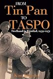
Birth of melody and tuning
Pan learns to sing.
Click to Reveal- Winston "Spree" Simon is credited with creating the first melody pan around 1945.
- This allowed steelpan to play full tunes, not just rhythm.
- Ellie Mannette refined the pan's shape and tuning methods.
- Anthony Williams introduced the Spider Web pan in 1953.
- This period established the steelpan as a melodic instrument.
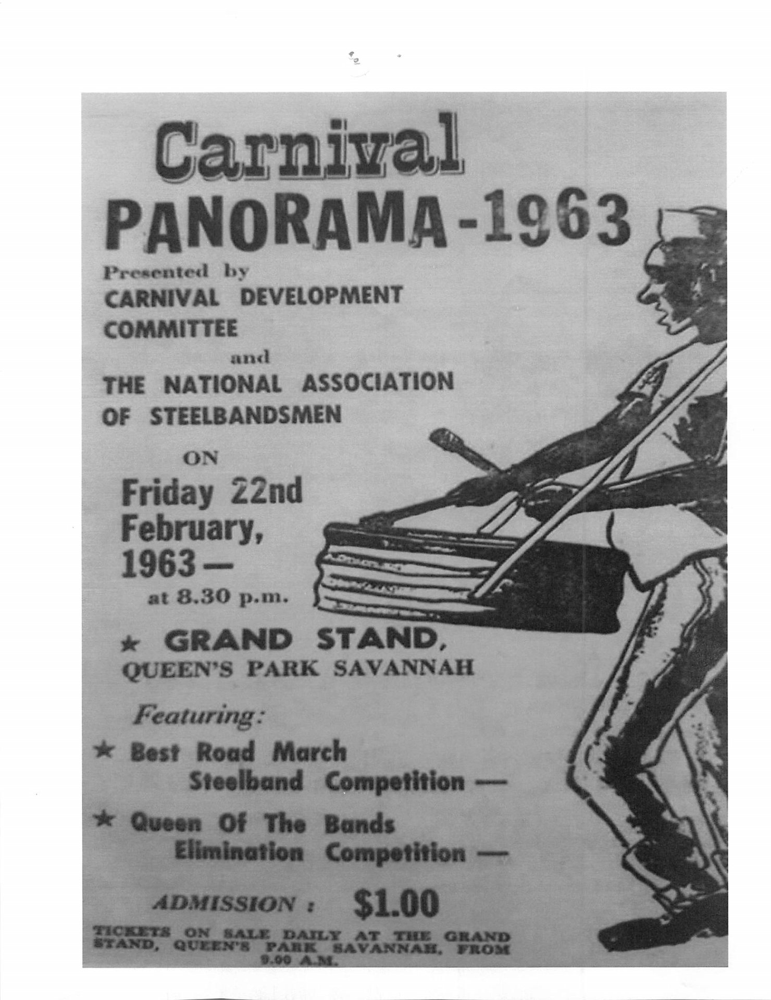
Panorama and orchestration
The panyard becomes a laboratory.
Click to Reveal- Panorama launched in 1963.
- The competition made panyards rehearsal hubs for large-scale performance.
- Arrangers pushed toward orchestral-style scoring.
- Bertie Marshall advanced pan tuning with brighter harmonics.
- Calypso and classical music entered large steelband arrangements.
Technology and modernization
Electronic pan, scoring, amplification
Click to Reveal- The E-Pan emerged in the 2000s through Salmon Cupid's invention.
- Digital scoring became part of the modern steelband workflow.
- Amplification and recording technology entered panyards.
- Research projects helped create instruments like the G-Pan and P.H.I.
- Innovation expanded from hammer and ear to electronics and engineering.
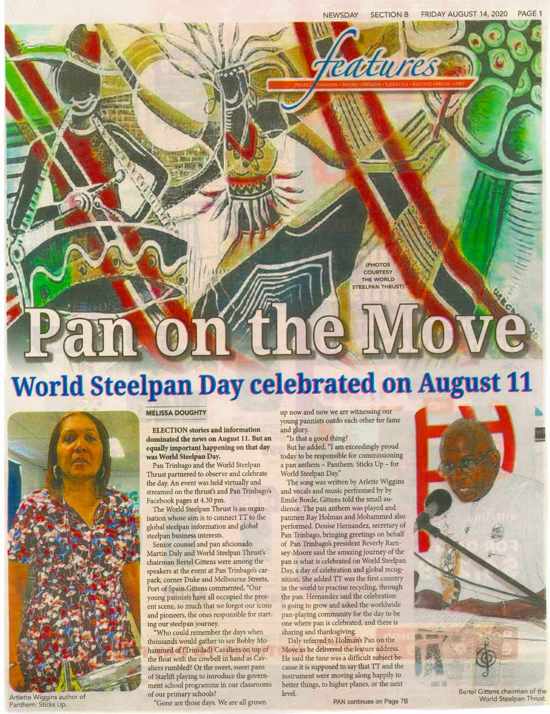
Hybrid and global pan
From panyard to livestream
Click to Reveal- Virtual panyards connect diaspora audiences through livestreams.
- Youth programmes encourage young arrangers and tuners to experiment.
- Hybrid instruments blend pan with electronic music and fusion genres.
- Steelpan festivals and competitions showcase Trinidad's innovation worldwide.
- Pan remains both a cultural treasure and a modern musical force.
Established in 1963
Trinidad's premier steelband competition
Click to Reveal- National Panorama is held annually during Carnival season.
- It is widely regarded as the most prestigious steelpan competition.
- Bands compete in categories such as large, medium, and small bands.
- Preliminaries happen in panyards, where judges visit bands directly.
- Finals are held at Queen's Park Savannah on the Saturday before Carnival Monday.
Panyard to Savannah
Prelims, semis, finals
Click to Reveal- The competition begins in January with regional preliminary rounds.
- The semi-finals are known as Savannah Party.
- Semi-finals blend competition energy with Carnival atmosphere.
- Final arrangements can run close to ten minutes.
- Performances showcase players, arrangers, drama, and musical storytelling.
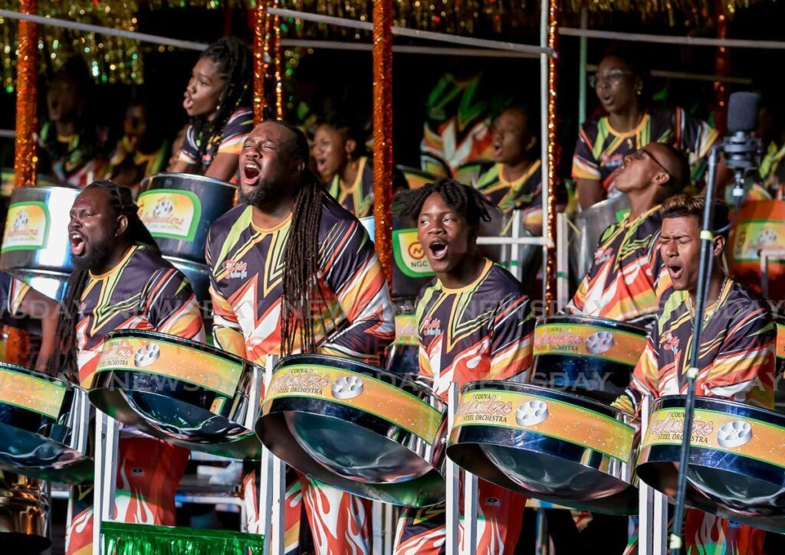
Classical skill and versatility
Reintroduced in 2024
Click to Reveal- Pan Is Beautiful focused on classical music, test pieces, and tunes of choice.
- It demanded high technical skill and musical versatility.
- The last earlier edition was held in 2013.
- It returned in 2024 as Steelpan is More Beautiful.
- Categories included single pan, ensemble, and orchestra.
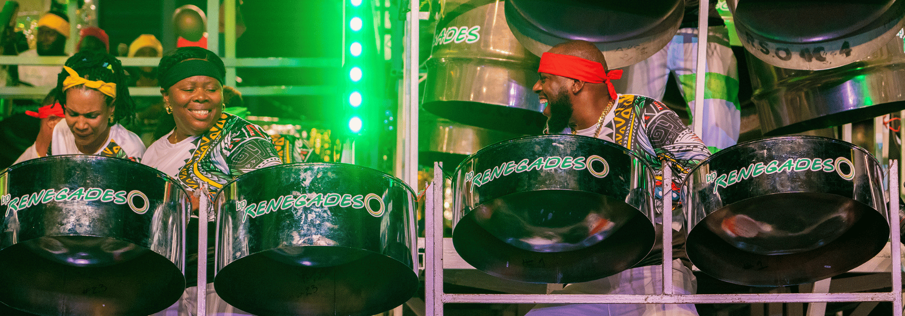
August 5-11, 2024
Culminated on World Steelpan Day
Click to Reveal- The inaugural World Steelpan Festival took place in Trinidad in August 2024.
- It commemorated the strength and resilience of Trinidad and Tobago.
- It culminated with World Steelpan Day celebrations on August 11.
- Pan in the 21st Century and Pan Down Memory Lane grew from concerts started in 1998.
- The festival supports Pan Trinbago's goal of activity beyond Panorama season.
Pan in the 21st Century
Pan Down Memory Lane
Click to Reveal- Pan in the 21st Century is for conventional bands.
- Those bands choose world music from 2000 onward.
- Pan Down Memory Lane is for Single Pan steelbands.
- Those bands play non-calypso tunes in calypso tempo.
- Memory Lane selections must not come from the 21st century.
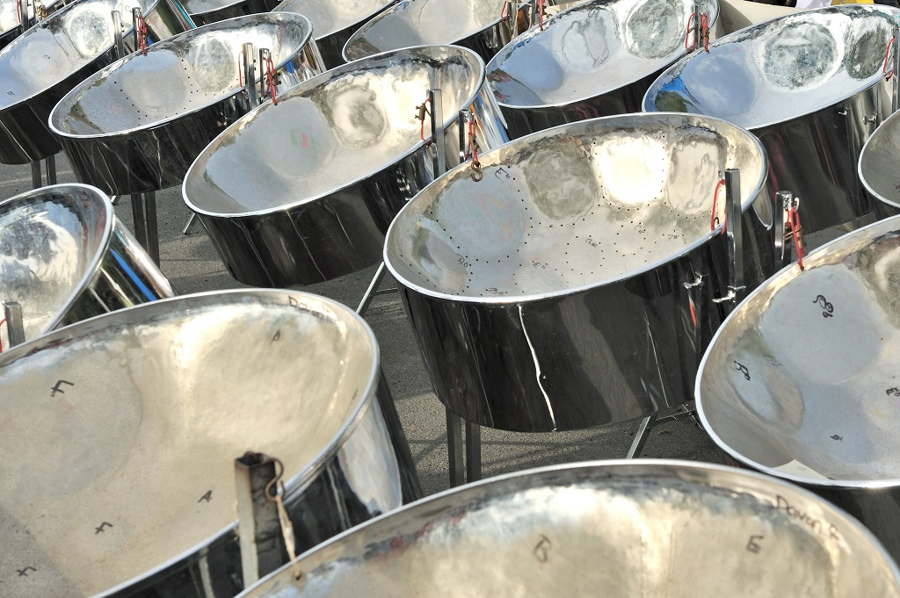
55-gallon oil drum
18-gauge or 1.2mm steel
Click to Reveal- A standard drum is about 23-24.5 inches wide and 33-35 inches high.
- Higher gauge numbers mean thinner metal.
- 18-gauge or 1.2mm steel is usually best for steelpan making.
- Too-thin steel may not hold pitch.
- Too-thick steel, like 16-gauge, may be too rigid to tune well.
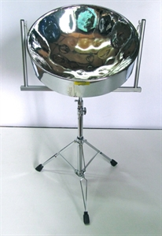
Resonance, strength, and tuning
The metal has to cooperate.
Click to Reveal- Proper thickness allows sinking and note shaping.
- Good steel supports resonant overtones instead of dull sound.
- The playing surface should hold tension after hammering and heating.
- The bottom should not be less than about 1.2mm for best performance.
- Sides may be slightly thinner to reduce instrument weight.
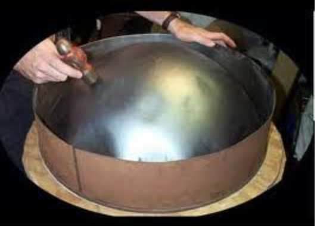
Inside-out pounding
The early pan shape
Click to Reveal- Early players pounded pans from the inside out.
- This created a convex playing surface.
- The shape was part of the early experimental stage of pan making.
- It limited the number of notes that could fit cleanly.
- The later concave form became the standard modern design.
Ellie Mannette's outside-in method
The modern steelpan bowl
Click to Reveal- Ellie Mannette was first to pound the metal from outside in.
- This created the concave steelpan shape used today.
- The concave bowl allowed more notes on the playing surface.
- It improved sound isolation between notes.
- Mannette and Invaders debuted the new-style pans in Carnival 1947.
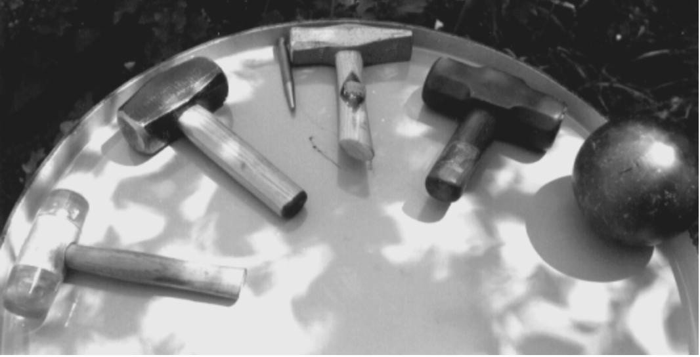
Select, clean, cut, centre-punch
Good sound starts before tuning.
Click to Reveal- Select and clean a 55-gallon drum.
- Remove residual oil and correct rim bends that can affect sound.
- Cut the drum to the desired length for the pan type.
- Mark the center of the drum head with a centre-punch.
- The future skirt length depends on the voice of the pan being made.
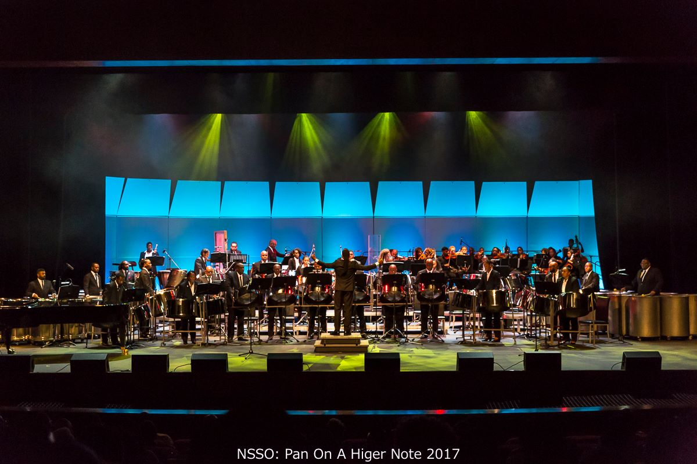
Heat prepares the drum.
The circle guides the bowl.
Click to Reveal- The drum is inverted and burned with a gas torch or open fire.
- Heating prepares the metal for sinking and tuning.
- The maker locates the dead-center of the drum.
- A center circle is marked on the drum head.
- That circle helps guide the shape of the sinking process.
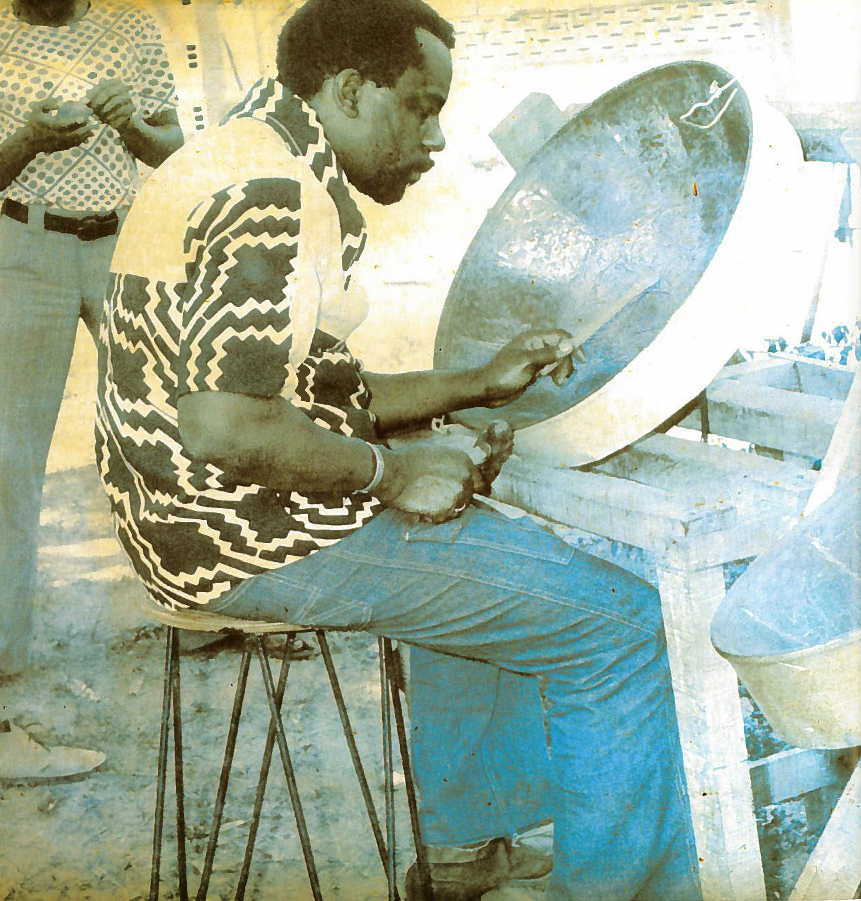
The flat drum becomes a bowl.
Tension is created by shape.
Click to Reveal- Sinking begins after marking an approximate 18-20cm circle.
- The maker gradually works wider radii such as 16cm and 20cm.
- A sledgehammer or pneumatic press can refine the bowl shape.
- Work often moves in a spiral from outer circles toward the center.
- The concave bowl increases surface tension for tuning.
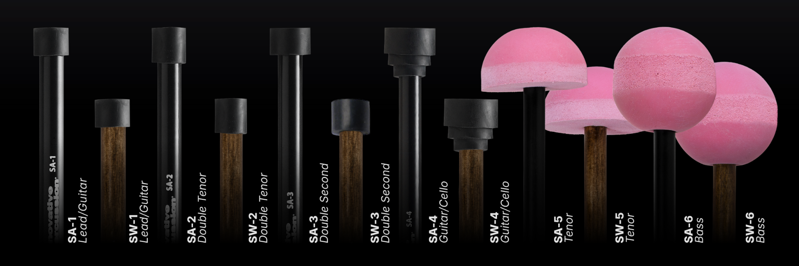
A smoother bowl makes better notes.
Even shape, even response
Click to Reveal- Smoothing follows the rough sinking process.
- A medium-weight hammer is used to even out the surface.
- The goal is a consistent, rounded bowl shape.
- Uneven metal can make note shaping and tuning harder.
- Smoothing prepares the surface for marking and grooving.
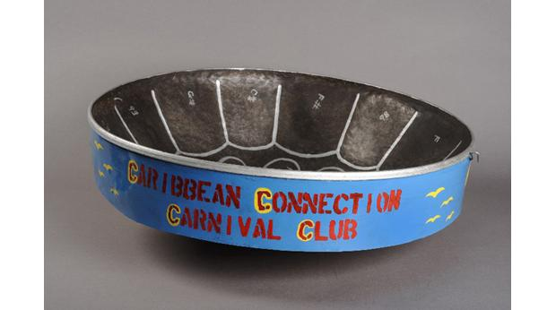
The layout appears in chalk.
Each note needs its own space.
Click to Reveal- The tuner outlines note positions on the concave surface.
- Chalk can be used to shape and separate the notes.
- The note layout affects playability and tonal balance.
- Good separation helps prevent one note from disturbing another.
- Marking turns the blank bowl into a planned instrument.
Nail punch and hammer
Boundaries for each note
Click to Reveal- Grooving defines the notes on the playing surface.
- A nail punch and hammer are used to make groove patterns.
- Grooves help isolate each note area.
- This improves clarity and reduces unwanted vibration between notes.
- After grooving, the drum begins to look like a true steelpan.
Hammering notes from underneath
Tiny convex note surfaces
Click to Reveal- After grooving, the drum is turned over.
- The maker hammers each note area from the underside.
- This creates a small convex surface for each note.
- The note shape affects pitch, response, and tone color.
- Knocking up is one of the fine craft stages before tuning.
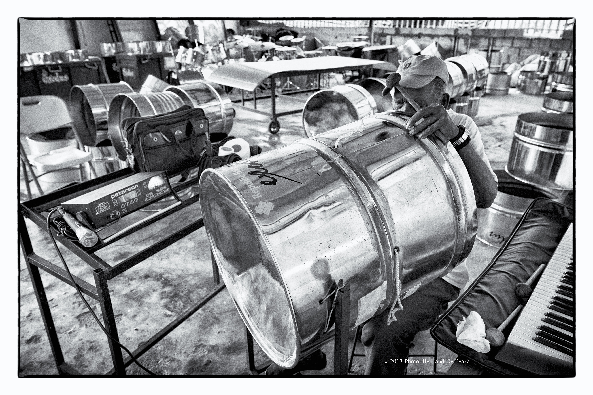
Galvanized, dented, or reconditioned?
Choose carefully.
Click to Reveal- Galvanized iron coating spoils the tone and should not be used.
- Poor metal may have hard carbon-rich spots that burst during sinking.
- Sharp dents and deep rust can crack when the metal is stretched.
- Re-conditioned drums may have been burned clean, harming the metal.
- Clear shiny metal suggests a new drum; grainy dull metal may be re-conditioned.
Hammer, punch, ruler, ear
Craft plus measurement
Click to Reveal- Cutting may use an electric jigsaw or old cutlass and hammer.
- Sinking uses gloves, marker, compass, 2.5-3kg hammer, and earmuffs.
- Marking notes uses a flexible ruler and pen or marker.
- Tuning needs large and plastic tuning hammers, a pan mallet, a good ear, and an electronic tuner.
- Backing and grooving use metal punches, backing sledgehammer, and smoothing hammer.
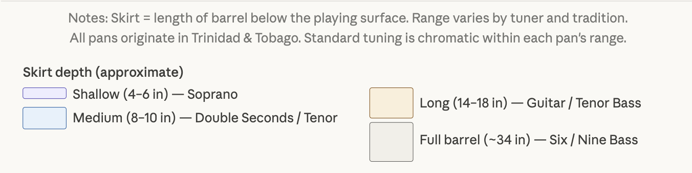
Longer skirt, lower pitch
Bass pans need deeper barrels.
Click to Reveal- The skirt is the cylindrical section below the concave playing surface.
- A deeper skirt creates a longer vibrating column of air.
- Longer vibrating columns help produce lower pitches.
- Bass pans use full 55-gallon barrels.
- Soprano pans are much shallower, like a dish.
Concert pitch: A = 440 Hz
Mallets shape the attack.
Click to Reveal- Modern steelpans are tuned to A440, where A above middle C is 440 Hz.
- A440 helps pans match orchestras and electronic instruments.
- ISO adopted A440 in 1955 and reaffirmed it in 1975 as ISO 16.
- Pan mallets use wooden dowels with latex rubber tubing on the striking end.
- Bass steelpans use sponge balls for a softer, fuller strike.
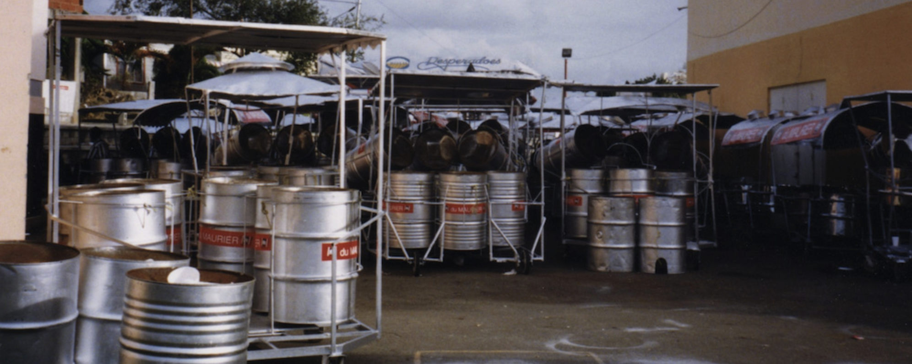
More than just a rehearsal space
Click to Reveal- Panyards are central hubs for music, community, and Carnival preparation.
- They evolved from informal street gatherings into cultural institutions.
- They preserve steelpan history while training new generations.
- They are places for rehearsal, mentorship, performance, and belonging.
- In Trinidad and Tobago, panyards symbolize resilience and national pride.
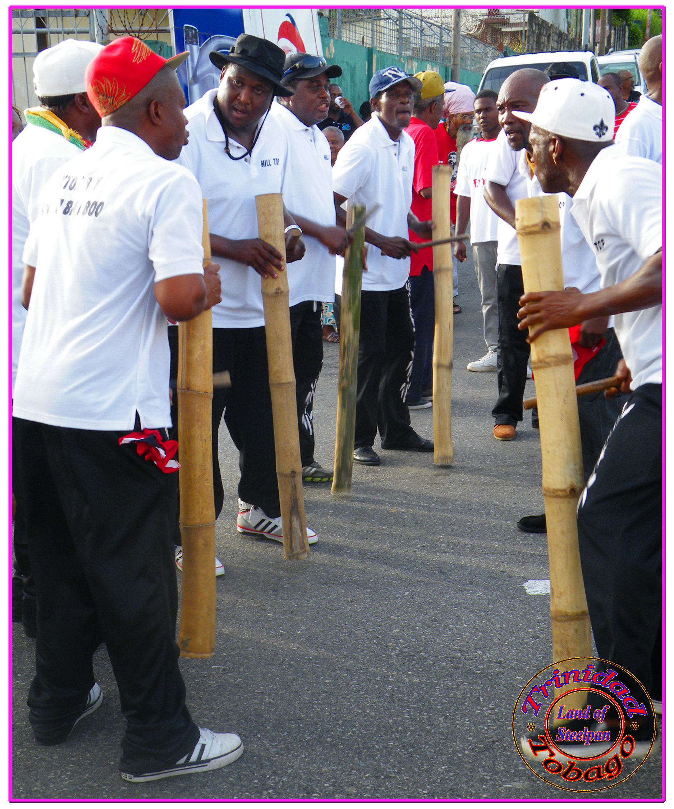
From wood to metal
Click to Reveal- Steelpan grew out of tamboo-bamboo traditions during World War II (1939-45) .
- Panyards formed in urban neighborhoods like Port of Spain, St. James, and Belmont.
- Many early panyards were empty lots or street corners.
- Young men experimented with discarded oil drums in these spaces.
- These informal yards became vital Carnival rehearsal centers.
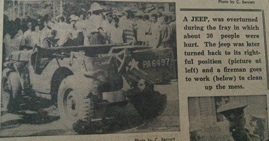
Stigma and survival
Click to Reveal- Early steelbands were often associated with violence and gang rivalry.
- This reputation led to police crackdowns.
- Despite the stigma, panyards remained important for Carnival preparation.
- The struggle reflected wider class and community tensions.
- Panyards helped steelpan move from suspicion toward cultural legitimacy.
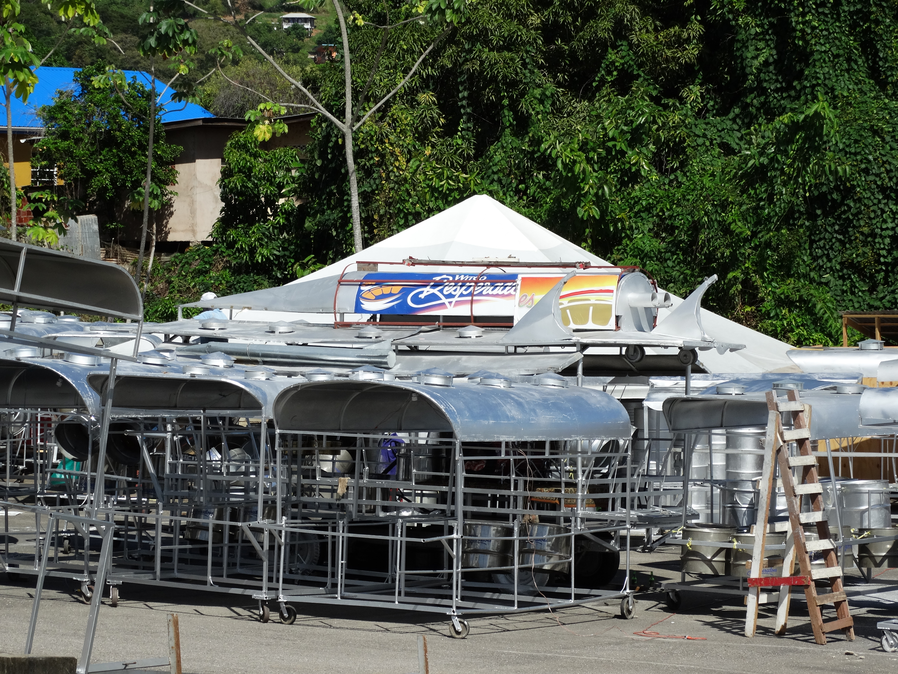
Permanent spaces and stronger bands
Click to Reveal- In the 1960s and 1970s, bands began establishing more permanent spaces, often supported bylLocal communities and sponsors.
- Pan pioneers such as Ellie Mannette and Winston "Spree" Simon refined instruments and tuning.
- The panyard became a workshop, rehearsal room, and community landmark.
- Steelpan gained increasing recognition as a national art form.
Competition Raised the Stakes
Click to Reveal- The first Panorama competition was held in 1963.
- The competition elevated panyards into serious preparation spaces.
- Large-scale arrangements required disciplined rehearsals.
- Rivalry became increasingly musical rather than street-based.
- Panorama helped turn panyard work into national spectacle.
Learning by listening and doing
Click to Reveal- Panyards became schools of music for younger generations.
- Players learned pan technique, rhythm, discipline, and arranging.
- Mentorship helped reduce youth involvement in crime.
- Community elders passed on musical memory and band culture.
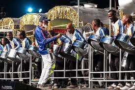
From Local Yard to Global Stage
Click to Reveal- By the 1980s and 1990s, steelbands toured internationally.
- Panyards became cultural attractions for visitors.
- Many yards gained semi-permanent structures like rehearsal sheds and storage areas to help protect the instruments.
- The panyard became part community base, part professional launchpad.
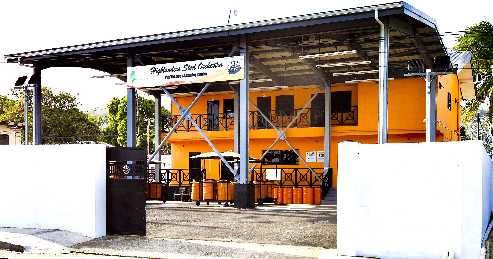
Funding, technology, preservation
Click to Reveal- Panyards began using amplification, recording, and digital tools.
- Many bands struggled with financial sustainability.
- Government grants and sponsors became important sources of support.
- Some panyards gained recognition as heritage sites.
- Urban development pressure made community resilience even more important.
Not just during Carnival season
Click to Reveal- Some modern panyards serve as cultural centers.
- They host workshops, concerts, and community events year-round.
- Youth programmes keep the tradition moving forward.
- Bands use livestreams and digital outreach to connect diaspora audiences.
- The panyard now bridges tradition, education, and technology.
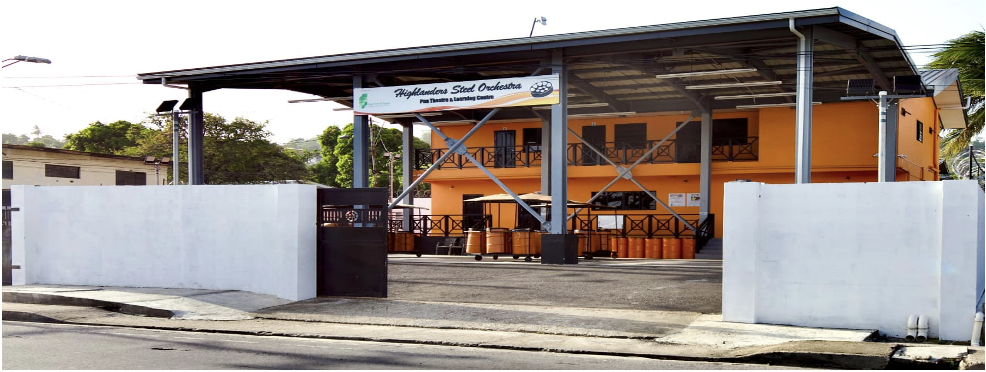
Where are panyards found today?
Click to Reveal- Early panyards were common in Belmont, St. James, and Port of Spain.
- As Panorama grew, formal panyards spread across Trinidad.
- Today, many towns have panyards that serve as rehearsal spaces, youth training centers, and cultural landmarks.
- The panyard map tells the story of pan's national reach.
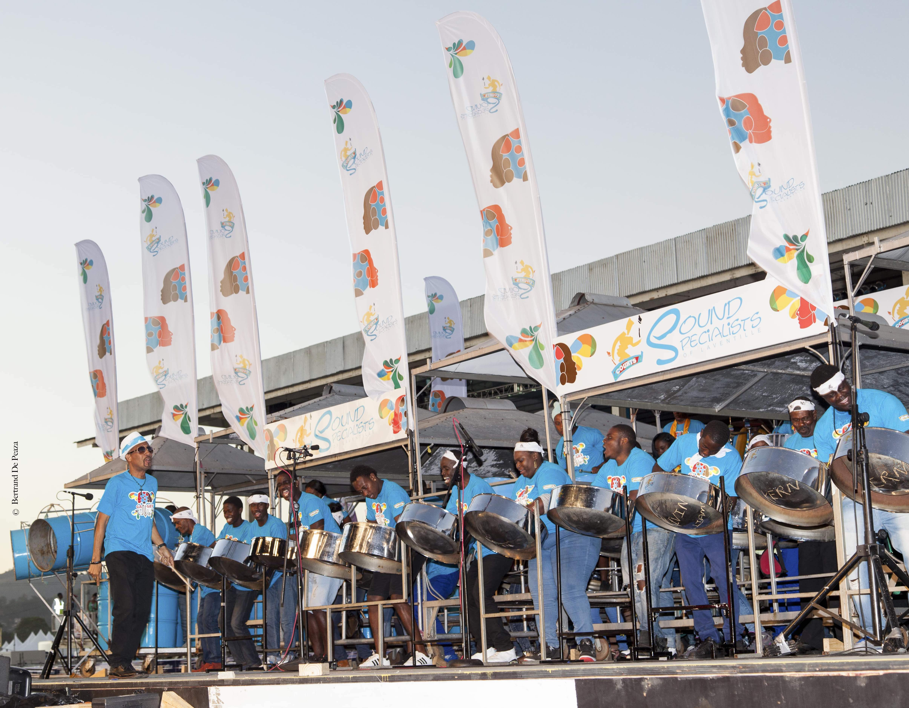
A dense pan corridor
Click to Reveal- BP Renegades: Renegades Way, Charlotte Street, Port of Spain.
- WITCO Desperadoes: Desperadoes Pan Theatre, George Street, Port of Spain.
- Courts Sound Specialists: La Paix Circular, Eastern Main Road, Laventille.
- Highlanders: Eastern Main Road, Success Village, Laventille.
- These yards connect city life, community identity, and pan excellence.
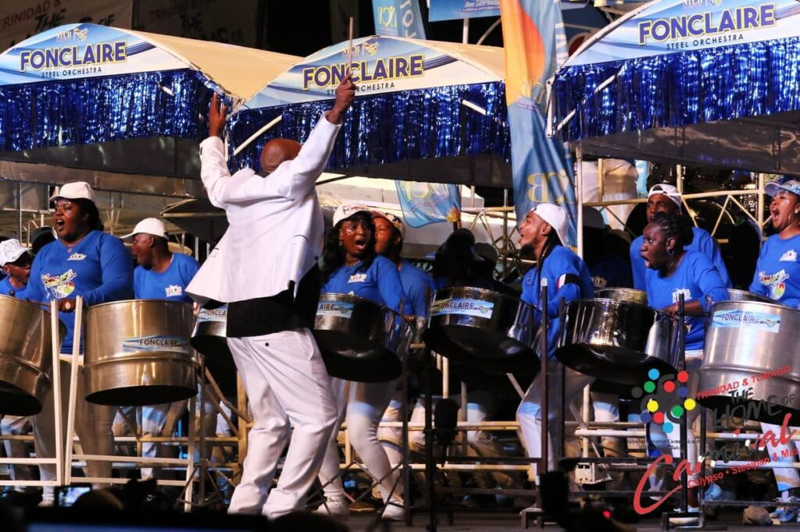
Pan beyond Port of Spain
Click to Reveal- Eastern examples include Birdsong Academy, Cordettes, SuperNovas, and Arima Golden Symphony.
- Arouca Worship Centre Steel Orchestra is also listed in the eastern region.
- Fonclaire Steel Orchestra represents San Fernando in the South/Central region.
- Buccaneers, Redemption Sound Setters, and Uptown Fascinators are some of the bands representing Tobago.
- The distribution shows pan as a national, not only urban, movement.
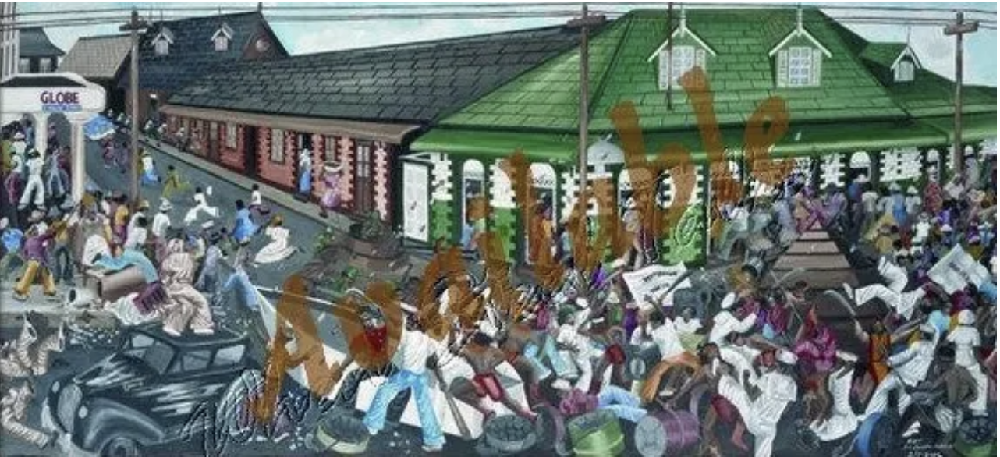
Musical rivalry becomes street conflict
Click to Reveal- Steelband clashes were violent confrontations between rival pan groups.
- They were most intense during the 1940s and 1950s.
- Clashes often happened during Carnival in Port of Spain.
- They involved arguments over women and territorial encroachments, community tensions, and fierce musical competition.
- They were part of the movement's difficult path toward formal recognition.
- Hotspots included Wrightson Road and French Street,nicknamed the "Gaza Strip" of Carnival because of frequent clashes.
When Rivals Met
Click to Reveal- Weapons included sticks, bottles, stones, and cutlasses.
- Trigger points included Carnival parades and practice sessions.
- Carib Tokyo and Invaders in 1950 at Green Corner, Port of Spain
- Desperadoes and San Juan All Stars in 1959 on Charlotte St, Port of Spain
- Casablanca and Invaders, 1950s(???), on ???
- Southern Marines and the Gondoliers on Coffee Street, San Fernando, in 1963
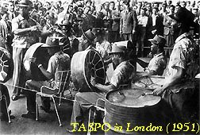
From clashes to competitions
Click to Reveal- In 1950, the National Association of Trinidad & Tobago Steelbandmen formed to promote unity and reduce violence.
- In 1951, eleven top pannists were selected for the Festival of Britain.
- Panorama and formal band structures later channeled rivalry into music.
- Clashes gave way to organized competition and international recognition.
What is WSTTT's mission?
Think development, opportunity, and steelpan.
Click to Reveal- WSTTT creates and supports opportunities for sustainable steelpan development.
- Its focus areas include manufacturing, education, entertainment, and therapy.
- It also supports wider national development initiatives.
- The organization treats pan as both cultural art and practical industry.
- Its work connects local talent with national and international growth.
Incorporated: 6 December 2019
Registered as a not-for-profit
Click to Reveal- WSTTT was incorporated on 6th December 2019.
- It was registered as a not-for-profit entity later that year.
- Its registered office is at 80 Roberts Street, Woodbrook, Port of Spain.
- It received endorsement and support from Pan Trinbago's Executive on 6 January 2020.
- That endorsement connected the organization to the formal steelpan movement.
Why does origin branding matter?
Pan belongs to Trinidad and Tobago.
Click to Reveal- WSTTT aims to ensure the national steelpan is properly branded.
- The goal is to clearly identify steelpan as originating from Trinidad and Tobago.
- It also advocates stronger copyright controls.
- Better protection helps artistes and creators safeguard their work.
- Branding pan protects cultural ownership while building global recognition.
Workshops, tuning, manufacturing
Turning culture into infrastructure
Click to Reveal- WSTTT wants workshops for refurbishing, tuning, and re-tuning pans.
- It supports standardization of the steelpan with help from pannists and arrangers.
- It wants training and certification to become more cohesive.
- It aims to develop local manufacturing facilities.
- Those facilities could supply both local and international markets.
Pan belongs in the curriculum.
Training tomorrow's pannists
Click to Reveal- WSTTT lobbies for deeper steelpan education in schools.
- It wants pan treated on par with mainstream musical instruments.
- Standardized training can especially help interested youths.
- The organization supports programmes that tackle barriers facing pan creatives.
- The goal is stronger educational, empowerment, and professional pathways.
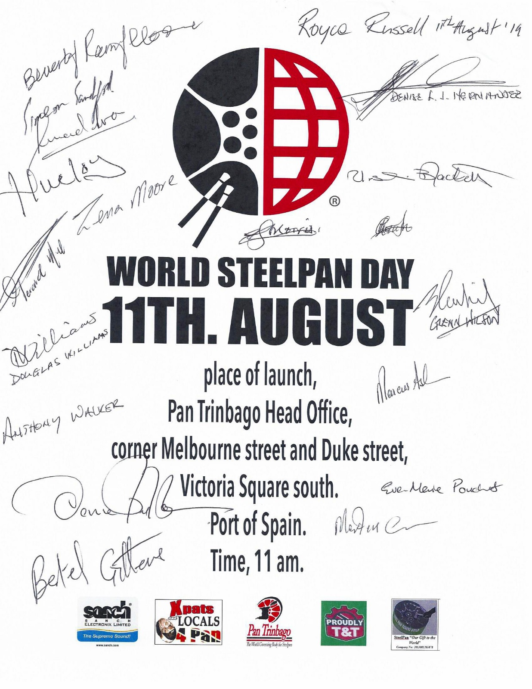
UN declaration: 24 July 2023
Observed annually on August 11
Click to Reveal- WSTTT helped obtain the UN General Assembly declaration of August 11 as International World Steelpan Day.
- The declaration was made on 24 July 2023.
- Then-Minister Randall Mitchell introduced the resolution at the 77th General Assembly.
- The draft resolution received co-sponsorship from 84 UN member states.
- The day gives pan an annual place on the UN calendar of events.
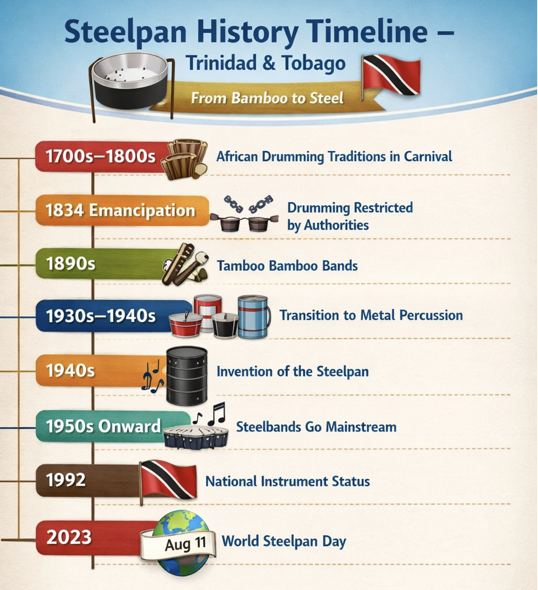
Where did the steelpan begin?
Click to Reveal- The steelpan was born in Trinidad and Tobago in the 1930s.
- It grew from Afro-Trinidadian Carnival traditions.
- Its story moves from bamboo percussion to metal bands to tuned steel pans.
- It symbolizes resilience, creativity, and cultural pride.
- Today it is celebrated globally, including through World Steelpan Day.
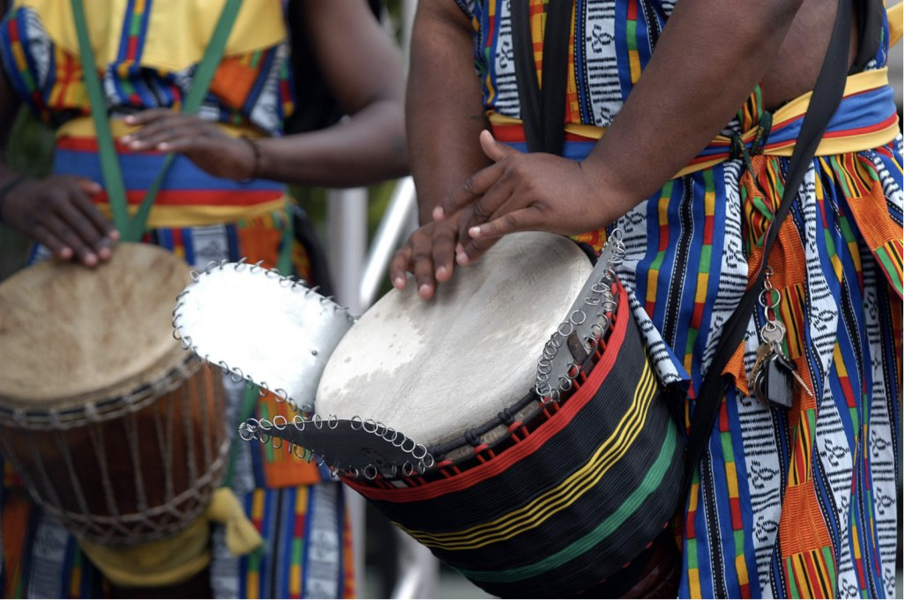
1700s-1800s
Click to Reveal- Enslaved Africans brought strong drumming traditions to Trinidad.
- After emancipation in 1834-1838, percussion became important in Carnival.
- Colonial authorities often restricted African-type drumming.
- Communities kept rhythm alive through adaptation and invention.
- That pressure helped shape new Carnival sound-makers.
1890s Carnival street music
Click to Reveal- Tamboo bamboo ensembles emerged in the 1890s.
- Players used bamboo sticks of different lengths.
- The bamboo parts imitated musical voices like soprano, alto, tenor, and bass.
- They became central to Carnival street music.
- They directly influenced the later steelband movement.
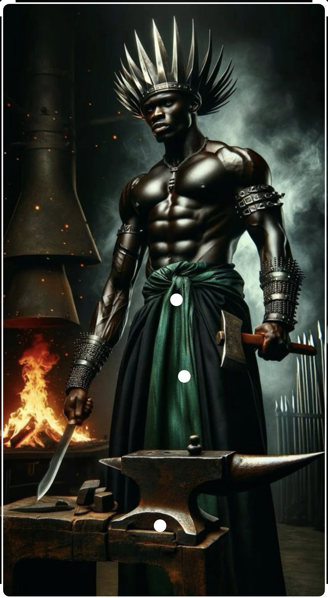
Louder, sturdier sound.
Click to Reveal- Tamboo-bamboo tubes broke after repeated pounding on the ground.
- In the 1930s, players began using metal household items.
- Early metal sounds came from soap boxes, biscuit tins, paint cans, and dustbin lids.
- Old vehicle brake drums and other discarded metal items added louder resonance.
- These experiments produced the modern steelpan's "engine room".
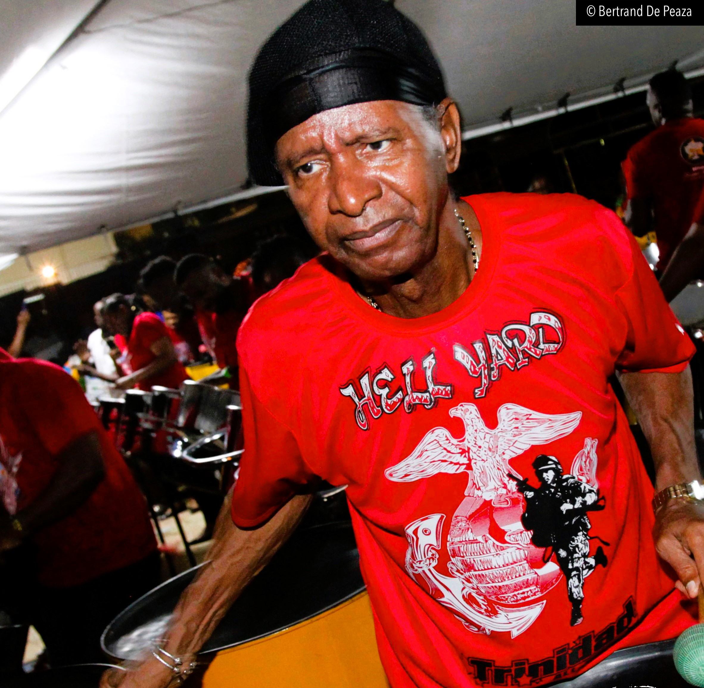
1930s-1940s
Click to Reveal- Metal bands replaced bamboo with found metal objects.
- The instruments were louder and more resonant than bamboo.
- Players experimented with tone, pitch, and rhythm.
- This period created a bridge between percussion noise and tuned melody.
- The steelband grew from these street-level experiments.
A key modern steelpan innovator
Click to Reveal- Innovators like Ellie Mannette helped shape the modern steelpan.
- They hammered and tuned oil drum surfaces to create distinct pitches.
- This made steel instruments capable of melody, not just rhythm.
- Tuning experiments helped organize steelbands musically.
- The modern pan was born through practical trial, skill, and ear.
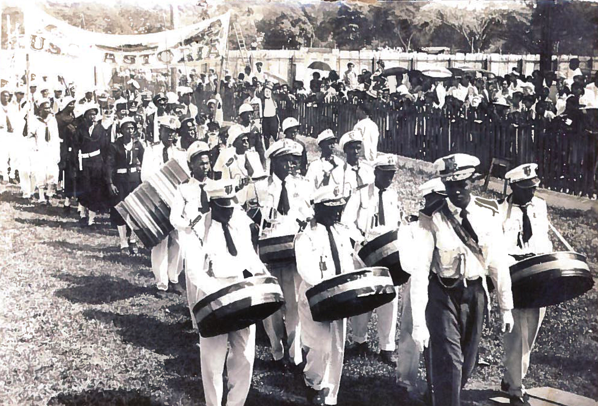
1940s-1950s
Click to Reveal- By the 1940s and 1950s, steelbands became more organized.
- Instruments were tuned to scales.
- Steelbands could now play melodies and harmonies.
- The instrument moved beyond raw street percussion.
- This set the stage for concerts, festivals, and international tours.
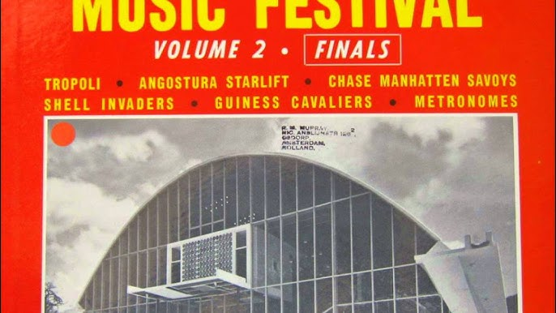
Pan embraces the classics.
Click to Reveal- From the 1950s onward, steelpan gained recognition beyond Carnival.
- It entered concert halls and international festivals.
- The steelband became a national cultural ambassador.
- Pan music spread through migration and touring.
- What began in the street became a global performance tradition.
A long journey to official recognition
Click to Reveal- In 1992, then-Prime Minister Patrick Manning recognised the steelpan the official national instrument of Trinidad and Tobago.
- This recognized pan as a major cultural achievement, affirming the instrument's local roots and national importance.
- Pan became a symbol of Trinidad and Tobago's creative identity.
- On 3 July 2024, the steelpan was formally declared as the National Musical Instrument of Trinidad and Tobago.
Officially on the United Nations' calendar
Click to Reveal- In 2023, the United Nations General Assembly proclaimed August 11 as World Steelpan Day.
- The date highlights the steelpan's global cultural significance.
- It celebrates Trinidad and Tobago's national instrument.
- It also recognizes the communities that carried pan worldwide.
- The day helps keep steelpan history visible to new generations.
Migration carried steelpan culture worldwide
Click to Reveal- Steelpan spread internationally through Trinidadian migration.
- Carnival culture helped carry pan to new audiences.
- London's Notting Hill Carnival became an important stage.
- Competitions like Panorama helped showcase steelband excellence.
- Today pannists perform and study pan across the world.
Produced that fateful oil drum
Click to Reveal- Elizabeth J. Cochran Seaman was better known as Nellie Bly.
- She was a famous journalist and world traveler.
- Her Iron Clad Manufacturing Company made practical steel barrels that helped solve problems in oil storage and shipping.
- Those industrial drums later became central to steelpan history.
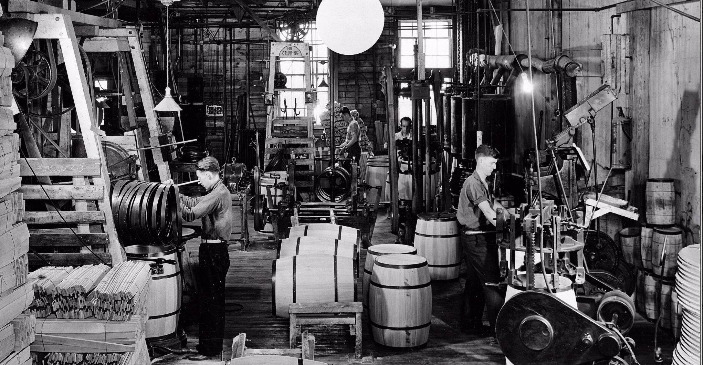
Fixing the leakage issue.
Click to Reveal- By 1900, oil production was expanding rapidly around the world.
- Wooden oil barrels were heavy and not fully leakproof.
- Oil companies needed durable, manageable, leak-resistant containers.
- Standard Oil introduced a steel 42-gallon drum in 1902, but it was flawed.
- The later 55-gallon steel drum became the pan-maker's raw material.
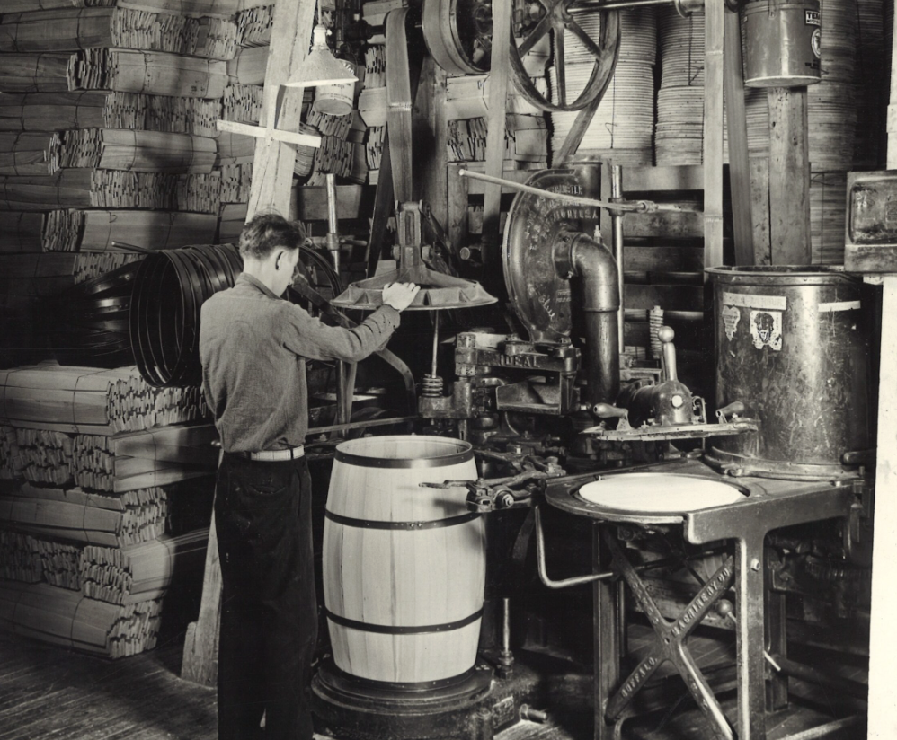
Machinist and superintendent
Click to Reveal- Henry Wehrhahn worked for Nellie Bly's Iron Clad Manufacturing Company.
- He received patents that led to the modern steel barrel.
- His design included straight sides, rolling hoops, and secure closures.
- He assigned the patent to Nellie Bly.
- The drum shape is close to the configuration still used today.
A happy accident.
Click to Reveal- Oil was discovered in southern Trinidad in 1866.
- By the early 1900s, several oil companies operated in the country.
- Trinidad supplied over 1 million barrels of oil to Britain in 1914.
- Empty 55-gallon drums became plentiful around ports and roadsides.
- Carnival musicians turned available industrial waste into music.
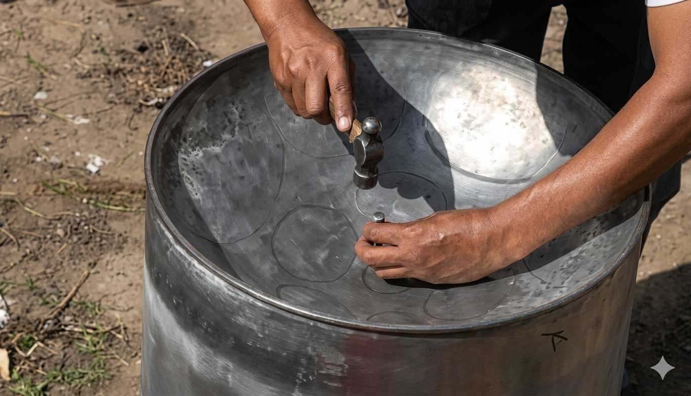
Industrial steel became musical steel.
Click to Reveal- Players cut cross-sections from 55-gallon metal containers.
- They indented the metal surface to create note areas.
- They tempered and tuned the surface to different pitches.
- Different lengths and shapes supported different pan voices.
- The modern pan is usually traced to around 1939 in Trinidad.

"Naval Base Trinidad"
Click to Reveal- World War II intensified Trinidad's importance as an oil supplier.
- By late 1941, Trinidadian oil supported British airplanes and ships.
- The US established over 200 bases in Trinidad and Tobago.
- Important sites included Chaguaramas, Docksite, and Wallerfield.
- The wartime oil economy helped make steel drums widely available.
1939-1945.
Click to Reveal- Carnival celebrations were banned during World War II.
- The wartime ban lasted from 1939 to 1945.
- Because of this, steelbands did not appear on the road immediately.
- The first road appearance of steelbands came in 1947.
- That moment helped launch steelband visibility in public Carnival space.
Trinidad All-Steel Pan Percussion Orchestra
Click to Reveal- Trinidad All-Steel Pan Percussion Orchestra was formed to attend the Festival of Britain in 1951.
- Its members came from various steelbands who often clashed in the streets.
- TASPO was the first steelband whose instruments were all made from oil drums.
- TASPO helped present Trinidad's pan innovation internationally, marking a major step in pan's global recognition.
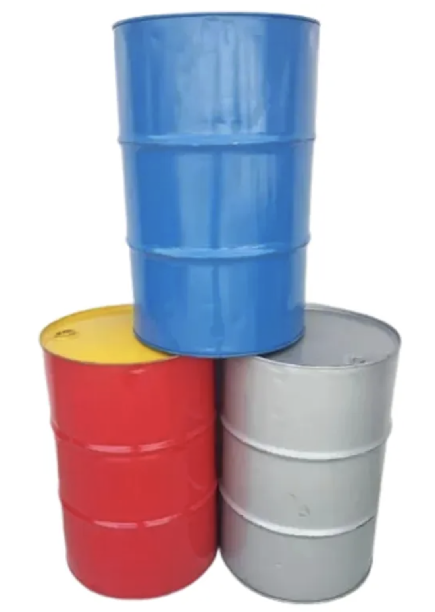
That fateful oil drum
Click to Reveal- A standard 55-gallon drum is about 35 inches tall.
- Its diameter is about 23 inches.
- It is usually made from low-carbon 18-gauge steel.
- It has reinforced rolling hoops and double-seamed top and bottom edges.
- Closures may be tight head for liquids or open head for solids and thick pastes.
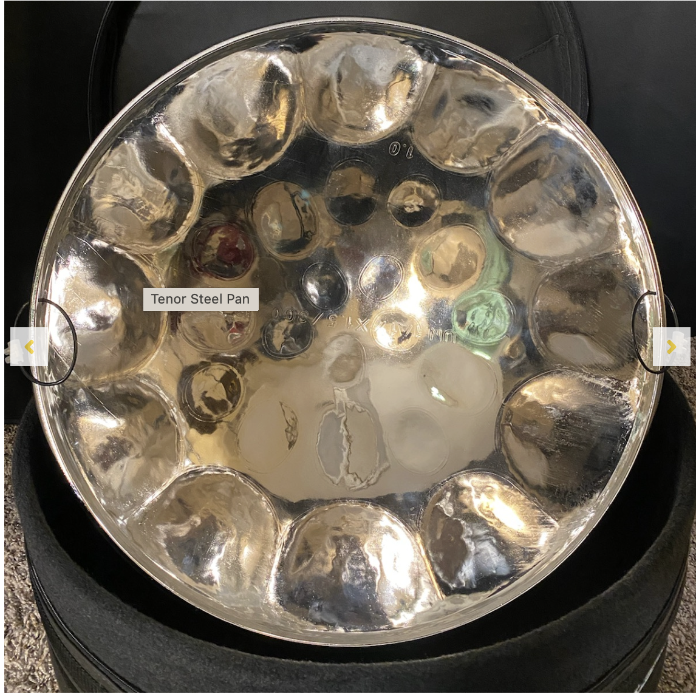
Is the steelpan a drum?
Click to Reveal- The steelpan is classified as a tuned hybrid percussion instrument.
- It is NOT a drum because
(1) each note area acts like a separate vibrating head and
, (2) the playing surface is metal, not skin.. - The steelpan is an idiophone: An idiophone is an instrument whose body vibrates to produce sound.
- Other idiophones include bells, gongs, rattles, and maracas.
Groups musical instruments by how they produce sound
Click to Reveal- Created by Erich Moritz von Hornbostel and Curt Sachs in 1914.
- Uses a decimal-style system, similar to library cataloguing.
- Main groups include idiophones, membranophones, chordophones, aerophones, and electrophones.
- The steelpan belongs with idiophones because its own body vibrates when the notes are struck.
- The system continues to be revised as new instruments are added.
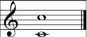
Same note name, higher or lower register
Click to Reveal- An octave is the interval between two notes where one vibrates at twice the frequency of the other.
- Octaves help organize note ranges across the steel orchestra.
- They also make melodies feel connected across high and low pans.
- On pan, octave awareness helps players find matching notes in different registers.
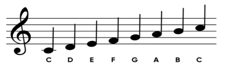
A ladder of notes from one note to its octave
Click to Reveal- A scale is a consecutive series of notes moving between a note and its octave.
- The word scale comes from the Latin scala, meaning ladder.
- A heptatonic scale has seven pitches per octave.
- Examples of heptatonic scales include diatonic, melodic minor, harmonic minor, and harmonic major scales.
- Scales give pannists a map for melody, harmony, and improvisation.
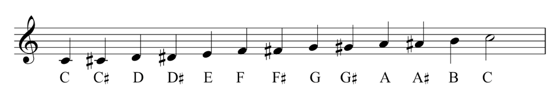
Also called a Dodecatonic Scale
Click to Reveal- Uses all 12 notes in the octave.
- The interval between adjacent notes is a semitone.
- It includes every pitch used in Western music.
- Chromatic movement can add tension, surprise, and colour to pan arrangements.
- It helps players understand sharps, flats, and key changes.
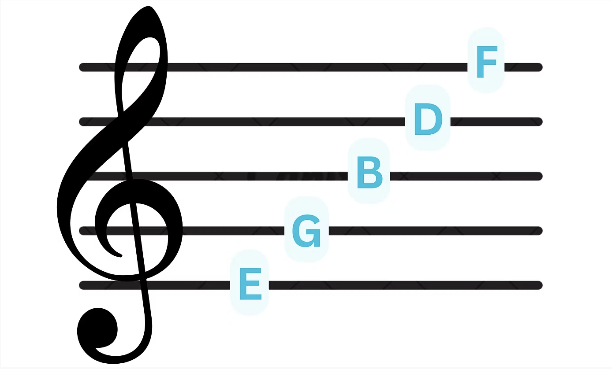
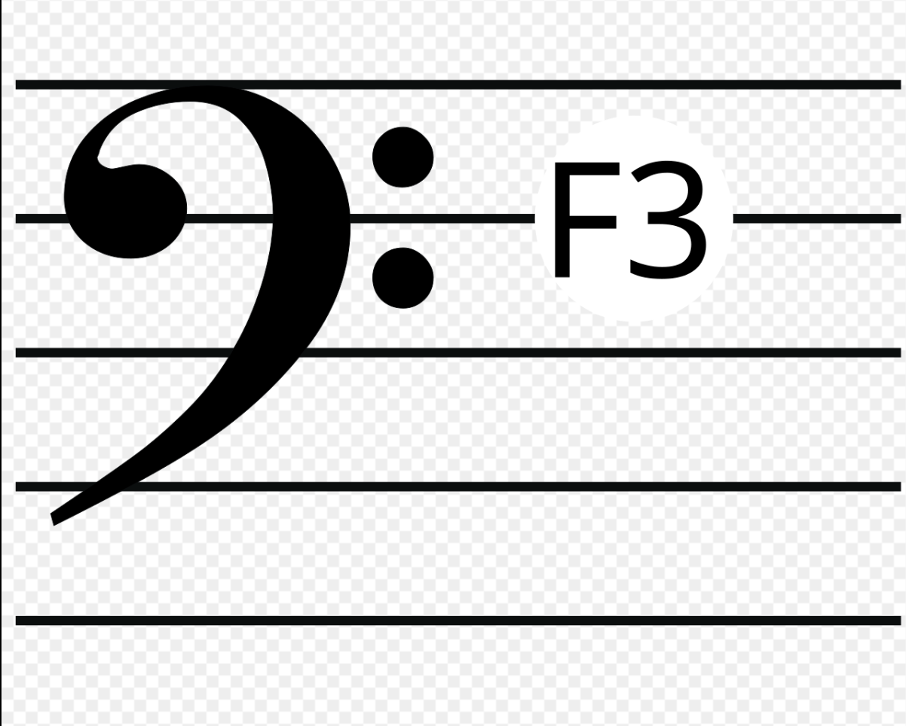
Two signs for reading pitch
Click to Reveal- Clefs help pan sections fit together like one full orchestra.
- The treble clef is also called the G clef because its curl starts on G.
- The bass clef is also called the F clef because its curl starts on F.
- Higher pans often read treble clef parts.
- Lower pans may read bass clef parts, especially in arranged scores.
What makes a piece feel complete?
Click to Reveal- Melody: the musical line of the piece.
- Harmony: notes played together to support the melody.
- Rhythm: the pattern of beats and time.
- Form: how the music is developed and arranged.
- Timbre: sound quality of individual notes
- Dynamics: volume
- Texture: how many layers of sound at one time.
From Ancient Greece to T&T
Click to Reveal- A visual representation of 12 musical keys and their relationships
- Discovered by Ancient Greek philosopher and mathematician Pythagoras.
- Pan Am North Stars tuner Anthony Williams applied the Circle of Fifths layout to the tenor pan in 1953.
- Adjacent notes were placed in intervals of fifths going counterclockwise and fourths going clockwise.
- Its web-like surface inspired the name "Spider Web Pan."
- The layout helps players find key signatures, chords, and note relationships quickly.
1950s - Present.
Click to Reveal- Ray Holman opened the door for composing specifically for pan, with Ray's Saga for Invaders in 1961.
- In 1972, Starlift placed third at Panorama with Holman's Pan on the Move.
- Len "Boogsie" Sharpe was the first to win Panorama with an “own tune”, This Feeling Nice in 1987
- Exodus won Panorama with Pelham Goddard's original composition, A Happy Song in 2001.
The steelbands' favorite musician
Click to Reveal- Aldwyn Roberts, known as Lord Kitchener, is ranked among the calypsonians most played by steelbands.
- His songs include "Pan in A Minor," "Bees Melody," and "Pan in Harmony."
- His melodies suited the staccato and rhythmic character of steelpans.
- Steelbands loved how his compositions carried clear musical structure.
- His work remains central to the story of music written for pan.

First female Panorama arranger
Arranged "Mas in May" in 1972
Click to Reveal- Panorama first: Arranged Mighty Sparrow's "Mas in May" in 1972.
- Began arranging in 1969 with Chase Manhattan Bank Savoys.
- Arranged for Mt. Hope Junior Secondary, Music Makers, and Pan Handlers Steel Orchestra.
- Music Director of Music Makers, a school founded over 30 years ago.
- Recipient of the Humming Bird Medal, Sunshine Award, and Kwanza Award.
Composer, arranger, driller, player
Started pan at age 15
Click to Reveal- Fast start: Began arranging for her school band within three months of learning pan.
- Joined Potential Symphony for the 1992 Panorama season.
- Served as Potential Symphony's Drill Master from 1994 to 1997.
- Toured with the Panazz Players, winners of a 1997 Sunshine Award.
- Worked closely with Phase II and Len "Boogsie" Sharpe from 2007.
1940-2011
Educator, director, artist, cultural icon
Click to Reveal- One of the first women to arrange music specifically for steel orchestras.
- Worked with bands including Birdsong, Desperadoes, Pandemonium, and Phase II.
- Brought classical training into steelband arrangements and performance practice.
- Co-founded the Schools Steelband Music Festival in 1981.
- Received the Humming Bird Gold Medal, an honorary UWI doctorate, and the Trinity Cross.
1951-1955
First female steel orchestra in T&T
Click to Reveal- Founded in 1951: Started by Hazel Henly with students from Bishop Anstey High School.
- First known as White Stars, then renamed Girl Pat after a yacht in Chaguaramas.
- Used pans borrowed from Invaders Steel Orchestra in Woodbrook.
- Ellie Mannette taught the band, with support from Beryl McBurnie.
- Helped break both gender and class barriers in the steelband movement.
1917-2007
Teacher, pianist, Girl Pat founder
Click to Reveal- Gathered Bishop Anstey students in 1950 to learn steelpan.
- Opened her Newtown home as a space for teaching, practice, and performance preparation.
- Worked with Marjorie Boothman and Invaders captain Ellie Mannette.
- Helped launch Girl Pat Steel Orchestra in 1951.
- Honored by the Sunshine Awards Hall of Fame in New York in 1999.
19?? – 2008?
Born and raised in Laventille, Port of Spain
Click to Reveal- First Captain of Hylanders/Highlanders Steel Orchestra in the 1950s.
- Profession: ???
- Responsible for: ???
- Migrated to Canada in 1959.
19?? – 20??
Click to Reveal- Tuner and arranger for Highlanders in the 1960s?
- Etc.
- Etc.

A defining Highlanders leader
Click to Reveal- Kim Loy Wong left in 1959, and Bertie Marshall assumed leadership.
- Marshall became Highlanders' captain and tuner.
- He is remembered as one of pan's major innovators and pioneers.
- His leadership shaped Highlanders' distinctive sound.
- He also became known as a legendary bandleader and arranger.
A band with a signature voice
Click to Reveal- Highlanders were known for heavy bass and ringing high tenors.
- The band became one of the most unique steelbands of its era.
- Bertie Marshall's innovations included the double tenor and high tenor.
- The band was among the first to feature an amplified tenor.
- Franklyn Olivierra played the amplified tenor that became part of the band's legend.
Classical music with steelband fire
Click to Reveal- In the 1960s and 1970s, Bomb tunes were a major steelband tradition.
- Steelbands would "drop the Bomb" on J'Ouvert morning.
- Highlanders were a perennial favorite in the Bomb competitions.
- Their memorable selections included "Let Every Valley be Exalted" and "Gypsy Rondo."
- These performances showed how pan could transform classical music.
A landmark Bomb victory
Click to Reveal- In 1965, Highlanders won first place in the Bomb competition.
- The band played Handel's "Every Valley Shall be Exalted" from Messiah.
- Franklyn Olivierra performed on Bertie Marshall's amplified high tenor.
- The released recording topped Radio Guardian's top ten list for an unusually long time.
- The performance became one of the most remembered Bomb moments in pan history.
A sacred-space first for steelband
Click to Reveal- The 1965 "Every Valley" performance was heard by Rev. Fr. John Sewell.
- He invited Highlanders to perform at Holy Trinity Cathedral in Port of Spain.
- This made Highlanders the first steelband to perform in a religious building in Trinidad.
- The band played alongside the Cathedral's choir.
- The band and choir were later featured on Highlanders' second RCA album.
Sponsorship and strong results
Forsyth Shirts and REED Trinidad
Click to Reveal- Highlanders had sponsorship from Forsyth Shirts and later REED Trinidad Limited.
- Corporate support and community backing strengthened the band.
- The 1965 Bomb victory was followed by a third-place Panorama finish in 1966.
- In 1966, Highlanders played Mighty Sparrow's "Obeah Wedding" for Panorama.
- In 1967, they placed second in Bomb with Rossini's "Italian Girl in Algiers."
Early 2000s revival
Click to Reveal- After Marshall left in the early 1970s, the band's fortunes declined.
- Former members and supporters revived Highlanders in the early 2000s.
- A 2003 panyard ceremony honored Bertie Marshall.
- Cabinet approved renaming Old St. Joseph Road on 26 September 2013.
- The Bertie Marshall Boulevard sign was unveiled on 17 October 2013.
Looking to the future
Click to Reveal- On 27 July 2018, Highlanders signed a 99-year lease with National Petroleum.
- The lease secures tenancy of the panyard until July 2117.
- Construction of a modern Pan Theatre and Music Institute began in 2019.
- The facility was completed and formally opened in December 2023.
- It supports classrooms, homework help, and after-school music literacy training.